Rètols del vídeo demo de 90 s
Tot el text que surt al vídeo, en l'ordre en què surt, i com es veu. Les imatges són de la presa final (94,5 s), gravada amb el codi de main 0556bc7.
Com es mostren
Etiqueta de la part (a dalt a la dreta)
- Diu sempre quina part del repte es resol a la pantalla que es veu.
- Hi és tot el vídeo, fins al tancament. Canvia quan canvia la part.
- En canviar de pantalla s'amaga i torna a sortir quan la pantalla nova ja és carregada.
Rètol (a baix, al centre)
- Tres línies: la part del repte (blau, majúscules), què es veu (gran) i què hi tenim en compte (petit).
- Entra amb una fosa i un lleuger moviment cap amunt (0,35 s).
- Es queda fins al rètol següent. En canviar de pantalla desapareix abans del clic, perquè cap rètol vell quedi sobre una pantalla nova.
- Fons fosc translúcid perquè es llegeixi sobre qualsevol pantalla, també al projector.
Mida real al vídeo (1920×1080): títol 29 punts i detall 19 punts, a escala 4/3.
Les etiquetes de part
| Etiqueta | Quan surt |
|---|---|
| Nivell 1 · Anàlisi: hi cap el model nou? | Portada i «Com ho sabem» |
| Nivell 2 · 5.2 · Torns nous | Horari proposat |
| Nivell 2 · Verificador oficial | Terminal amb el verificador |
| Nivell 2 · 5.3 · Imprevistos | Imprevistos |
| Nivell 2 · 5.2 i 5.4 · Resum per a la Junta | Resum per a la Junta |
| Nivell 3 · Assistent d’IA | Assistent |
| Nivell 2 · Comprova-ho tu: les ordres, des de l’app | Pàgina «Comprova-ho tu» |
| (cap) | Tancament |
Els rètols, un per un
Temps de la presa final, arrodonits. Els segons exactes de cada rètol són a retols-demo-90s.json.
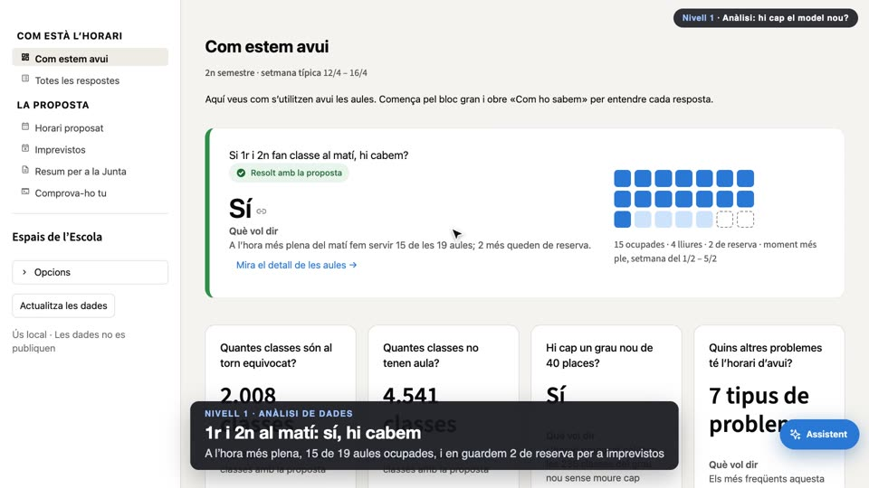
A l’hora més plena, 15 de 19 aules ocupades, i en guardem 2 de reserva per a imprevistos
- Part
- Nivell 1 · Anàlisi de dades
- Es veu
- El cursor passa per «Sí» i per «15 ocupades».
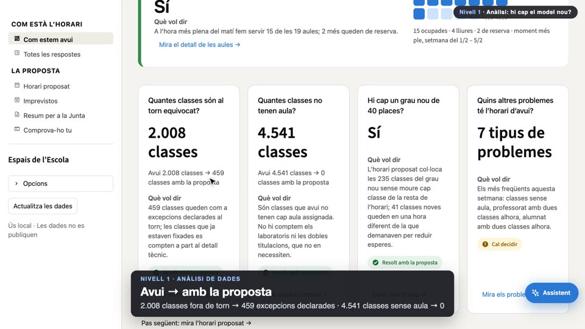
2.008 classes fora de torn → 459 excepcions declarades · 4.541 classes sense aula → 0
- Part
- Nivell 1 · Anàlisi de dades
- Es veu
- Desplaçament a les targetes; el cursor assenyala les dues comparacions.
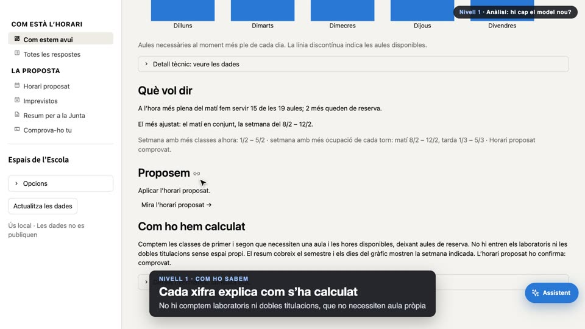
No hi comptem laboratoris ni dobles titulacions, que no necessiten aula pròpia
- Part
- Nivell 1 · Com ho sabem
- Es veu
- Baixa fins a «Com ho hem calculat».
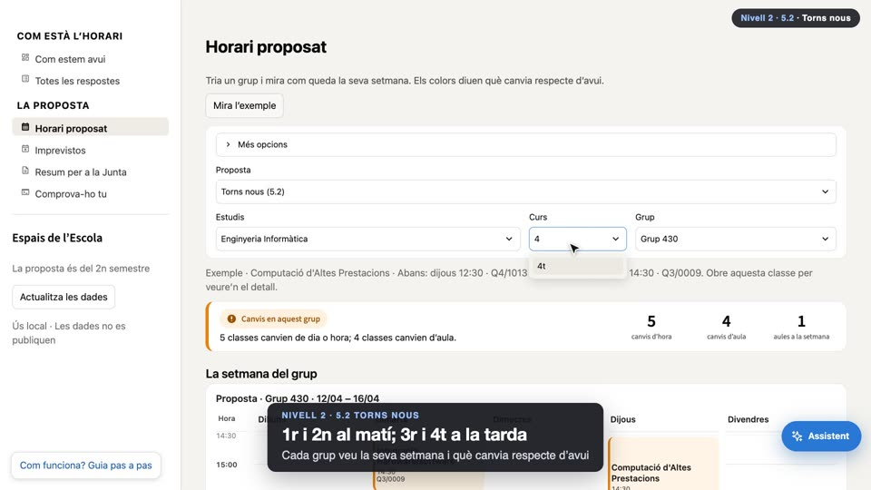
Cada grup veu la seva setmana i què canvia respecte d’avui
- Part
- Nivell 2 · 5.2 Torns nous
- Es veu
- Es tria 4t curs, «Mira l’exemple», «Més opcions» i la pastilla «Canvia».
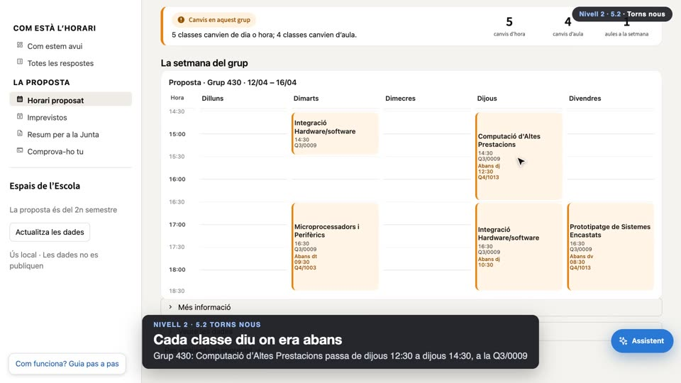
Grup 430: Computació d’Altes Prestacions passa de dijous 12:30 a dijous 14:30, a la Q3/0009
- Part
- Nivell 2 · 5.2 Torns nous
- Es veu
- Clic a la classe: s'obre el detall amb «Abans: dijous 12:30 · Q4/1013».
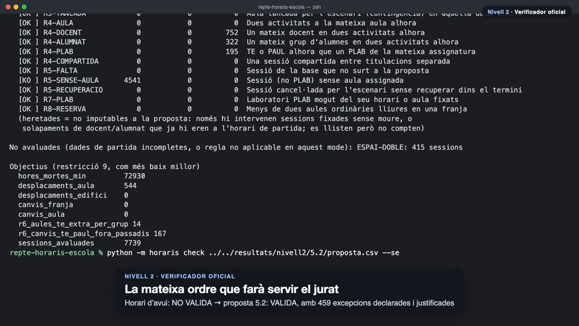
Horari d’avui: NO VALIDA → proposta 5.2: VALIDA, amb 459 excepcions declarades i justificades
- Part
- Nivell 2 · Verificador oficial
- Es veu
- Dues ordres reals. El veredicte surt en vermell (NO VALIDA) i en verd (VALIDA).
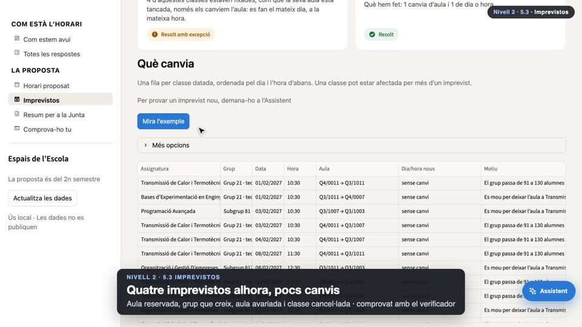
Aula reservada, grup que creix, aula avariada i classe cancel·lada · comprovat amb el verificador
- Part
- Nivell 2 · 5.3 Imprevistos
- Es veu
- El cursor assenyala «65 classes canvien d’aula».
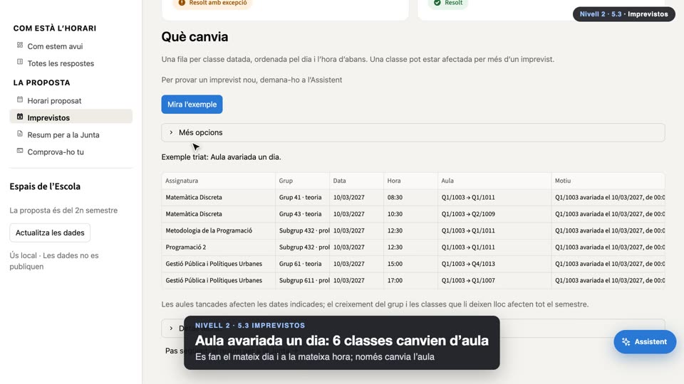
Es fan el mateix dia i a la mateixa hora; només canvia l’aula
- Part
- Nivell 2 · 5.3 Imprevistos
- Es veu
- La taula «Què canvia» es filtra a l'exemple.
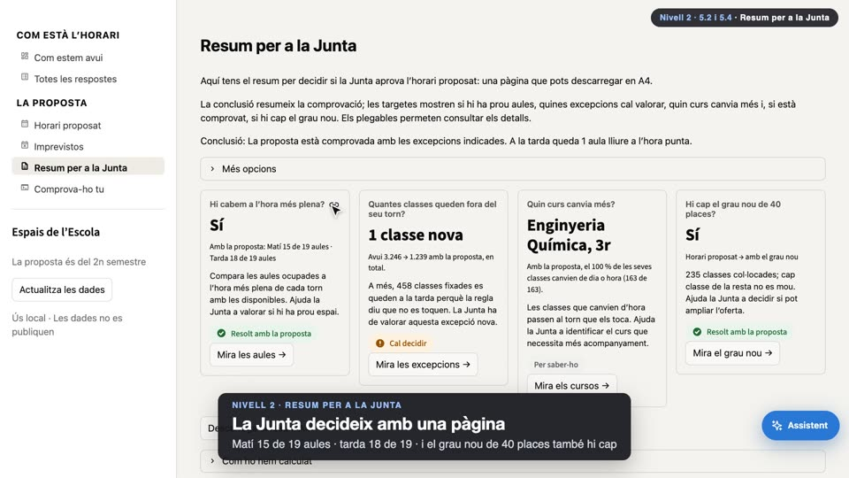
Matí 15 de 19 aules · tarda 18 de 19 · i el grau nou de 40 places també hi cap
- Part
- Nivell 2 · Resum per a la Junta
- Es veu
- El cursor passa per «Hi cabem a l’hora més plena?» i «Hi cap el grau nou de 40 places?».
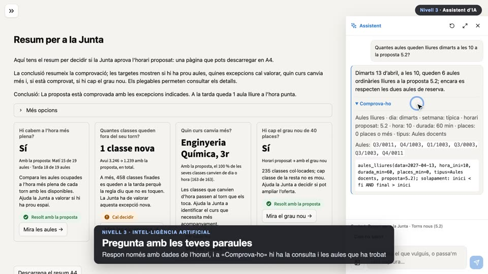
Respon només amb dades de l’horari, i a «Comprova-ho» hi ha la consulta i les aules que ha trobat
- Part
- Nivell 3 · Intel·ligència artificial
- Es veu
- S'escriu «Quantes aules queden lliures dimarts a les 10 a la proposta 5.2?» i s'obre «Comprova-ho» amb les 6 aules.
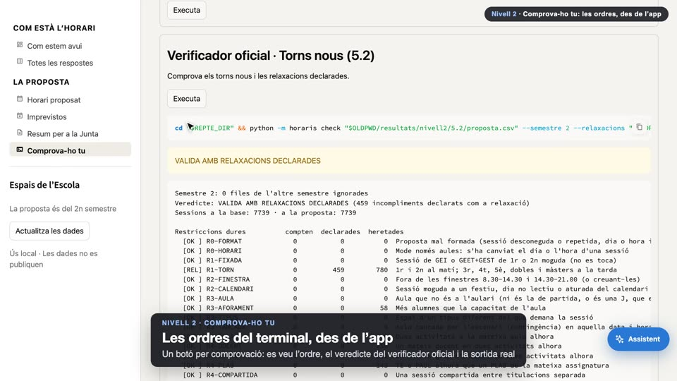
Un botó per comprovació: es veu l’ordre, el veredicte del verificador oficial i la sortida real
- Part
- Nivell 2 · Comprova-ho tu
- Es veu
- Clic a «Executa» del verificador de la 5.2: surt VALIDA AMB RELAXACIONS DECLARADES i la sortida.
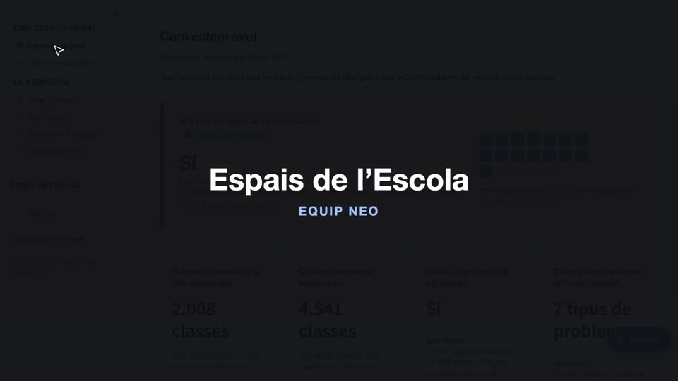
EQUIP NEO
- Es veu
- Torna a «Com estem avui» i fosa a negre. Sense etiqueta de part.